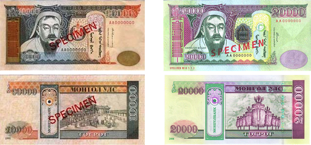

Banknotes of Mongolia

Security
- Security thread - a metallic thread is embedded inside the paper. It can be seen by holding the note against the light.
- Serial numbers are printed with special inks that change colors as the note is put under the ultra violet light.
- Watermark in 500, 1.000, 5.000, 10.000 and 20.000 bills depicting the figure of founder of Mongolian Empire in 1206 Chinggis Khan. Smaller bills like 5, 10, 20, 50, 100 Togrog has a watermark depicting the figure of Sukhbaatar, leader of Mongolian Revolution in 1921. Watermarks can be seen on the right side of the note, when the note is held against the light.
- 4. Latent image depicting a Warrior on the Horse has sculptured engraving on the right bottom corner on the oval dot of 5.000, 10.000 and 20.000 Togrog bills. When looking at the note at a given angle the above legend becomes visible.
- The basic designs of larger notes have special effects against offset scanner and photocopiers.
- Light in ultra-violet.
- On a right side of the bigger notes there is micro lettering with wording "Mongol bank" which is printed in very small type looks like a plain solid line to the naked eye, but under magnification it can be read.
- Intaglio printing made on the main figure and denominational numbers can be felt with the tip of your fingers.
- On the left side of the main figure there is an invisible printing of denominational figure, which can only be seen under quartz or ultraviolet light.
- The perfect register- see through feature in the front of the notes on the signboard designed like a small round dot, which is mirrored in the same position in the back of the note. When seen through the light, both sides match exactly.